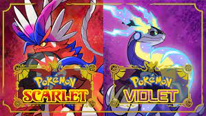

La console ps5 de sony fait l'unanimité. Les joueurs sont très satisfaits et impressionnés. La nouvelle manette diffère de celle des consoles précédentes
qui était plus petite et fragile. De plus, le design général de la console est moderne et raffinée ce qui la rend parfaite pour les salons. Elle est
néanmoins un peu moins performante que sa concurante de chez Microsoft et également plus coûteuse que celle-ci. Elle reste tout de même plus apprécié
par ses fonctionnalités et exclusivités.
9
/
10
La série Cyberpunk Edgerunner est une vrai oeuvre d'animation. Son histoire se déroule dans l'univers du jeu Cyberpunk,
mais aborde l'histoire d'un personnage non lié à celui-ci. L'histoire, les personnage, les sons, etc... tout est parfaitement réalisé ! Son seul point faible
serait la durée de celle-ci qui a déçu tout les spectateur.
9.5
/
10
Le jeu Overwatch 2 ne peut pas vraiment être considéré comme un nouveau jeu. En effet, le jeu est quasi identique
au précédent. Les seuls changements se résume à quelques cartes, quelques personnages ainsi que de nouveaux éléments de personnalisation.
Malheureusement le nouveau système de passe de combat et d'achat de cosmétiques a fait polimique et ruine un peu cette partie du jeu.
6.5
/
10

Le nouveau jeu de la série Pokémon a déçu de nombreux fans de la saga. Les graphiques n'étaient pas à la
hauteur d'un jeu de 2022 et les nombreux bugs freinent la progression des joueurs. Malgré tout, le jeu possède de nombreuses fonctionnalités
révolutionnaires pour cette série de jeu ainsi qu'un vrai niveau de difficulté absent dans les derniers jeux.
6
/
10